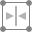
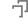

Settings
The following settings can be adjusted from the context toolbar:
- Fill—click the color swatch to display a pop-up panel to update fill color.
- Stroke—click the color swatch to display a pop-up panel to update stroke color.
- Stroke properties—set the stroke style, width, joins, cap ends, order and arrowhead settings via a pop-up panel.
 Presets—click to display a pop-up panel from which you may select an existing preset (if any are available) or create a new preset.
Presets—click to display a pop-up panel from which you may select an existing preset (if any are available) or create a new preset.- Convert to Donut—Swaps the ellipse for a donut shape.
- Convert to Pie—Swaps the ellipse for a pie shape.
- Enable Transform Origin—displays a movable transform origin about which the shape can be rotated.
- Hide Selection while Dragging—when selected, the object's selection box is temporarily hidden when transforming the object. If this option is off, the selection box remains visible during transformation. The selected behavior persists across all objects unless it is manually switched.
-  Show Alignment Handles—when selected, displays alignment handles at the center and edges of the selected object. Hovering over these handles displays a floating guideline across the page. You can drag the handles to position the center or edges of the selected object in line with this guide.
-  Transform Objects Separately—when selected, where multiple objects are selected, they can be be resized, rotated and sheared independently of each other instead of transforming the bounding box.
 Cycle Selection Box—after reshaping, rotating, or shearing the object, this option toggles the selection box between a Base box (honors the transform), Regular bounds (ignores transform) or Planar bounds (fitting to an isometric grid if active).
Cycle Selection Box—after reshaping, rotating, or shearing the object, this option toggles the selection box between a Base box (honors the transform), Regular bounds (ignores transform) or Planar bounds (fitting to an isometric grid if active).- Convert to Curves—converts the selected object into a series of connected lines and nodes.
- Select new object—when enabled (default), the new shape layer will be selected on creation.